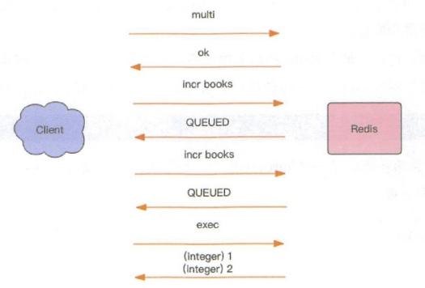

每个事务的操作都有 begin、commit 和 rollback，begin 指示事务的开始，commit 指示事务的提交，rollback 指示事务的回滚。它大致的形式如下。
begin();
try {
command1();
command2();
....
commit();
} catch(Exception e) {
rollback();
}
Redis 在形式上看起来也差不多，分别是 multi/exec/discard。multi 指示事务的开始，exec 指示事务的执行，discard 指示事务的丢弃。
> multi
OK
> incr books
QUEUED
> incr books
QUEUED
> exec
(integer) 1
(integer) 2
所有的指令在 exec 之前不执行，而是缓存在服务器的一个事务队列中，服务器一旦收到 exec 指令，才开执行整个事务队列，执行完毕后一次性返回所有指令的运行结果。
因为 Redis 的单线程特性，它不用担心自己在执行队列的时候被其它指令打搅，可以保证他们能得到的「原子性」执行。

原子性
事务的原子性是指要么事务全部成功，要么全部失败，但Redis并没有。Redis 的事务根本不能算「原子性」，而仅仅是满足了事务的「隔离性」，隔离性中的串行化——当前执行的事务有着不被其它事务打断的权利。
下面这个例子，事务执行到中间遇到失败了，因为我们不能对一个字符串进行数学运算，事务在遇到指令执行失败后，后面的指令还继续执行，所以 poorman 的值能继续得到设置。
> multi
OK
> set books iamastring
QUEUED
> incr books
QUEUED
> set poorman iamdesperate
QUEUED
> exec
1) OK
2) (error) ERR value is not an integer or out of range
3) OK
> get books
"iamastring"
> get poorman
"iamdesperate
discard(丢弃)
Redis 为事务提供了一个 discard 指令，用于丢弃事务缓存队列中的所有指令，在 exec 执行之前。通过下面示例，我们可以看到 discard 之后，队列中的所有指令都没执行，就好像 multi 和 discard 中间的所有指令从未发生过一样。
> get books
(nil)
> multi
OK
> incr books
QUEUED
> incr books
QUEUED
> discard
OK
> get books
(nil)
优化
上面的 Redis 事务在发送每个指令到事务缓存队列时都要经过一次网络读写，当一个事务内部的指令较多时，需要的网络 IO 时间也会线性增长。所以通常 Redis 的客户端在执行事务时都会结合 pipeline 一起使用，这样可以将多次 IO 操作压缩为单次 IO 操作。比如我们在使用 Python 的 Redis 客户端时执行事务时是要强制使用 pipeline 的。
pipe = redis.pipeline(transaction=true)
pipe.multi()
pipe.incr("books")
pipe.incr("books")
values = pipe.execute()
Watch
针对Redis数据先进行查询，再进行操作计算处理后，再写回Redis的场景。会出现并发问题，因为有多个客户端会并发进行操作。我们可以通过 Redis 的分布式锁来避免冲突，这是一个很好的解决方案。分布式锁是一种悲观锁，那是不是可以使用乐观锁的方式来解决冲突呢？
Redis 提供了这种 watch 的机制，它就是一种乐观锁。有了 watch 我们又多了一种可以用来解决并发修改的方法。
while True:
do_watch()
commands()
multi()
send_commands()
try:
exec()
break
except WatchError:
continue
watch 会在事务开始之前盯住 1 个或多个关键变量，当事务执行时，也就是服务器收到了 exec 指令要顺序执行缓存的事务队列时，Redis 会检查关键变量自 watch 之后，是否被修改了 (包括当前事务所在的客户端)。如果关键变量被人动过了，exec 指令就会返回 null 回复告知客户端事务执行失败，这个时候客户端一般会选择重试。
> watch books
OK
> incr books # 被修改了
(integer) 1
> multi
OK
> incr books
QUEUED
> exec # 事务执行失败
(nil)
当服务器给 exec 指令返回一个 null 回复时，客户端知道了事务执行是失败的，通常客户端 (redis-py) 都会抛出一个 WatchError 这种错误，不过也有些语言 (jedis) 不会抛出异常，而是通过在 exec 方法里返回一个 null，这样客户端需要检查一下返回结果是否为 null 来确定事务是否执行失败。
注意事项
Redis 禁止在 multi 和 exec 之间执行 watch 指令，而必须在 multi 之前做好盯住关键变量，否则会出错。
本文由 Sajor
创作，采用 知识共享署名4.0 国际许可协议进行许可
本站文章除注明转载/出处外，均为本站原创或翻译，转载前请务必署名
最后编辑时间为: 2022-03-16T10:38:29+08:00